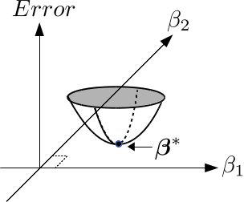

最小二乗法による線形回帰とは (全体の目次に戻る)
最小二乗法による線形回帰を具体例を用いて説明するために、プロ野球選手の「打率、得点率、盗塁率」という３つの特徴を用いて年収を予測することを考えます．
まずは次の重要なキーワードについて説明します．
計画行列(design matrix)とは
計画行列(design matrix)とは、$n \times d$次元の行列を示しています．
ここで、$n$はサンプル数、$d$は特徴数です．
具体例を示すと、３人分(n=3)の打率、得点率、盗塁率は計画行列を用いて
\[\begin{align*}
\bm{X}=
\begin{bmatrix}
打率 & 得点率 & 盗塁成功率 \\ \hline
0.255 & 0.38 & 0.60 \\
0.280 & 0.40 & 0.80 \\
0.222 & 0.38 & 0.75
\end{bmatrix}
\end{align*}\]
と表現できます．なお、これらの特徴（打率、得点率、盗塁率）は「素性」や「説明変数」と呼ばれることもあります．
表記をより一般化すると
\[\begin{align*}
\bm{X}=
\begin{bmatrix}
x_{11} & x_{12} & x_{13} \\
x_{21} & x_{22} & x_{23} \\
x_{31} & x_{32} & x_{33}
\end{bmatrix}
\end{align*}\]
となります．計画行列は、ユーザーが自由に設計することができます．例えば、元の特徴を2乗して
\[\begin{align*}
\bm{X}=
\begin{bmatrix}
x_{11}^2 & x_{12}^2 & x_{13}^2 \\
x_{21}^2 & x_{22}^2 & x_{23}^2 \\
x_{31}^2 & x_{32}^2 & x_{33}^2
\end{bmatrix}
\end{align*}\]
とすることも考えられます．
今は説明の簡単化のために特徴の2乗を考えていますが、
どのような特徴を用いると予測精度が良くなるかは、伝統的には事前知識に基づいて決めます．
機械学習ではとにかく沢山の特徴をしておき、後ほど説明するLASSOなどを用いて自動的に特徴を選択することもあります．
非説明変数(アウトカム, レスポンス)とは
上の例で使用した３人分のプロ野球選手の年収について考えて下さい．
もし、３人分の年収が
\[\begin{align*}
\bm{y}=
\begin{bmatrix}
年収「万円」 \\ \hline
1200 \\
3000 \\
500
\end{bmatrix}
\end{align*}\]
と与えられているとき、これを非説明変数、アウトカムあるいはレスポンスと呼びます．
最小二乗法による線形回帰とは
ここでは線形回帰モデル（※1）
\[\bm{f}(\bm{X}; \bm{\beta}) = \bm{X}\bm{\beta}\]
を用いて、未知の入力$\tilde{\bm{X}}$に対する$\bm{f}(\tilde{\bm{X}}; \bm{\beta})$を予測することを考えます．
ここで、$\bm{\beta}$は予め与えられた$\bm{X}$とレスポンス$\bm{y}$を用いて決める$d$次元のパラメータを示しています．
プロ野球選手の年収を予測する例で説明すると、１年間分のデータから$\bm{X},\bm{y}$を求めておき、
来年度の年収$\hat{\bm{y}}$を予測することに対応します．
最小二乗法では、手持ちの$\bm{X},\bm{y}$を用いて$\bm{\beta}$を以下の基準により求めます．
\[\bm{\beta}^* := \arg \min_{\beta \in \mathbb{R}^d} \|\bm{X}\bm{\beta} - \bm{y}\|^2\]
ここで$\|\cdot\|$はユークリッドノルム（$L_2$ノルム）を示しています．
$\|\bm{a}\|^2 = \bm{a}^\top \bm{a}$ですので、計画行列の $i$ 行目の行ベクトルの転置を $\bm{x}_i \in \mathbb{R}^d$ と表すと
\[\bm{\beta}^* := \arg \min_{\beta \in \mathbb{R}^d} \sum_i^n (\bm{\beta}^\top \bm{x}_i - y_i)^2\]
と表すこともできます．
この最小化問題は、例えば$\bm{\beta}$が2次元のベクトルのとき、図に示される
最適解$\bm{\beta}^*$を求める問題です．

図の縦軸は$\|\bm{X}\bm{\beta} - \bm{y}\|^2$の値を示しています．
最適解$\bm{\beta}^*$は$\|\bm{X}\bm{\beta} - \bm{y}\|^2$のサーフェスが真っ平らになっている点（勾配が0となる点）ですから、
\[\frac{\partial}{\partial \bm{\beta}}\|\bm{X}\bm{\beta} - \bm{y}\|^2 = \bm{0}\]
を満たすものが$\bm{\beta}^*$となります．
つまり
\[
\begin{align*}
\frac{\partial}{\partial \bm{\beta}}\|\bm{X}\bm{\beta} - \bm{y}\|^2 &=
2\bm{X}^\top (\bm{X}\bm{\beta} - \bm{y}) = \bm{0}, \\
\bm{\beta}^* &= (\bm{X}^\top \bm{X})^{-1} \bm{X}^\top \bm{y}
\end{align*}
\]
と求めることができます(※2, ※3)．
なお、2乗和誤差（$\|\bm{X}\bm{\beta} - \bm{y}\|^2$）を最小化させるパラメータ$\bm{\beta}^*$を求める方法は、
最小二乗法（OLS: ordinary least squares method）と呼ばれます．
今後、最小二乗法の発展形である、リッジ回帰やLASSO回帰を扱っていきます．
脚注：
- ※1: ここで使用するモデル$\bm{f}(\bm{X}; \bm{\beta}) = \bm{X}\bm{\beta}$は、
パラメータ$\bm{\beta}$に関して線形です．計画行列の特徴に非線形性を考慮した特徴（元の特徴の２乗など）を追加しておけば、特徴に対しては非線形なモデルとなります．
- ※2: 今、$J(\bm{\beta}) := \|\bm{X}\bm{\beta} - \bm{y}\|^2$として、$\bm{\beta}=\bm{0}$の周りで2次のTaylor展開を考えます：
\[J(\bm{\beta}) \approx J(\bm{0}) + \left(\frac{\partial J(\bm{0})}{\partial \bm{\beta}}\right)^\top \bm{\beta} + \frac{1}{2}\bm{\beta}^\top \left( \frac{\partial^2 J(\bm{0})}{\partial \bm{\beta} \partial^\top \bm{\beta}} \right) \bm{\beta} \]
この式の右辺を$\bm{\beta}$に対して偏微分して$\bm{0}$と置くと
\[
\begin{align*}
\left(\frac{\partial J(\bm{0})}{\partial \bm{\beta}}\right) + \left( \frac{\partial^2 J(\bm{0})}{\partial \bm{\beta} \partial^\top \bm{\beta}} \right) \bm{\beta} &= \bm{0},\\
\bm{\beta} &= -\left( \frac{\partial^2 J(\bm{0})}{\partial \bm{\beta} \partial^\top \bm{\beta}} \right)^{-1} \frac{\partial J(\bm{0})}{\partial \bm{\beta}}
\end{align*}
\]
となり、これはNewton法の探索方向（Newtonステップ）と呼ばれます．具体的に計算すると
\[-\left( \frac{\partial^2 J(\bm{0})}{\partial \bm{\beta} \partial^\top \bm{\beta}} \right)^{-1} \frac{\partial J(\bm{0})}{\partial \bm{\beta}}
= -(2\bm{X}\bm{X})^{-1} 2\bm{X}^\top (\bm{X}\bm{0} - \bm{y}) = (\bm{X}^\top \bm{X})^{-1} \bm{X}^\top \bm{y}\]
となり$\bm{\beta}^* = (\bm{X}^\top \bm{X})^{-1} \bm{X}^\top \bm{y}$と一致します．
このようにして$\bm{\beta}^*$はNewton法を１ステップ回せば求めることもできます．
これは$J(\bm{\beta})$はパラメータ$\bm{\beta}$に関して2次形式（$\bm{\beta}$が1次元のときは2次関数）になっているので当然ですね．
- ※3: $\bm{\beta}^* = (\bm{X}^\top \bm{X})^{-1} \bm{X}^\top \bm{y}$は2乗和誤差（$\|\bm{y} - \bm{X}\bm{\beta}\|^2$）を最小化させます．
これは$\bm{y}$が平均ベクトル$\bm{X}\bm{\beta} \in \mathbb{R}^{n}$,
分散共分散行列
$\Sigma = \sigma^2 \bm{I} \in \mathbb{R}^{n \times n}$
の n 次元正規分布
$N(\bm{X}\bm{\beta}, \Sigma)$から発生していると仮定したときの最尤推定量と一致します．
具体的に、$\bm{y}$が観測されたもとで尤度関数
\[J(\bm{\beta}) = c \times \exp\left( -\frac{1}{2} (\bm{y} - \bm{X}\bm{\beta})^\top \Sigma^{-1} (\bm{y} - \bm{X}\bm{\beta}) \right) \]
を考えます．
ここで、$c$は既知の定数です．この右辺を最大化する点（$\frac{\partial \log(J)}{\partial \bm{\beta}}=\bm{0}$を満たす点）は$\bm{\beta}^* = (\bm{X}^\top \bm{X})^{-1} \bm{X}^\top \bm{y}$となります．